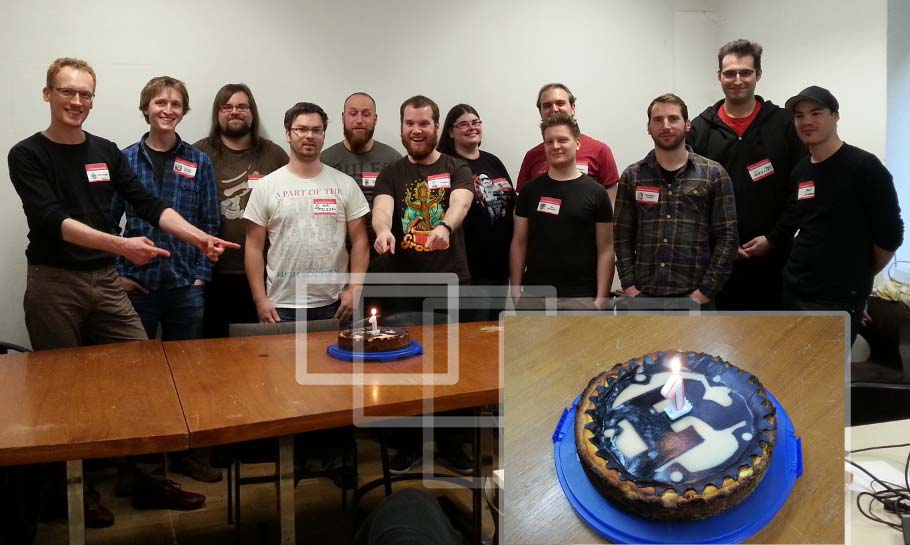

{% assign curDate = site.time %}
{% assign next_meetups = site.posts | where_exp: "item", "item.date > curDate" | sort: "date" %}
{% assign past_meetups = site.posts | where_exp: "item", "item.date <= curDate" | sort: "date" %}
{% assign next_meetup = next_meetups | first %}
{% assign prev_meetup = past_meetups | last %}
{% assign further_down_the_line = next_meetups | shift %}

<div class="page-home" role="main">
  <section class="next-meetup">
  {% if next_meetup %}
    <p class="section-headline">Next</p>
    <article class="event is-next-meetup">
      {% if next_meetup.talks != false %}
        {% include event.html event=next_meetup skip_date=true call_for_talks=true show_abstracts=false %}
      {% else %}
        {% include event.html event=next_meetup skip_date=true call_for_talks=false %}
      {% endif %}
    </article>
  {% else %}
    <h1>
      We are currently planning our next meetup
    </h1>
    <p>
      <a href="{{ site.feedback_url }}">
        Help us!
      </a>
    </p>
  {% endif %}
  </section>

  {% if further_down_the_line.size > 0 %}
  <section class="future-meetups">
    <p class="section-headline">Upcoming</p>
    {% for event in further_down_the_line %}  
      {% include event-inline.html event=event %}
    {% endfor %}
  </section>
  {% endif %}

  {% if prev_meetup %}
  <section class="prev-meetup">
    <p class="section-headline">Previous</p>
    {% include event-inline.html event=prev_meetup %}
  </section>
  {% endif %}

  <section class="featured-impressions">
    <h1 class="section-headline">Featured Impressions</h1>
    <figure>
      <figcaption>The Future of Rust - Alex Crichton</figcaption>
      <div class="embed ratio-16-9">
        <video class='video' controls='controls' poster='https://static.media.ccc.de/media/events/rustmcb/rustmcb.state-of-rust_preview.jpg' preload='none'>
          <source data-lang='eng' data-quality='high' src='http://cdn.media.ccc.de/events/rustmcb/webm-hd/rustmcb.state-of-rust.webm' title='webm full-hd eng' type='video/webm'/>
          <source data-lang='eng' data-quality='high' src='http://cdn.media.ccc.de/events/rustmcb/h264-hd/rustmcb.state-of-rust.mp4' title='mp4 full-hd eng' type='video/mp4'/>
        </video>
      </div>
    </figure>

    <figure>
      <figcaption>Rust 1.0 Anniversary Cake</figcaption>
      
    </figure>
  </section>
</div>
